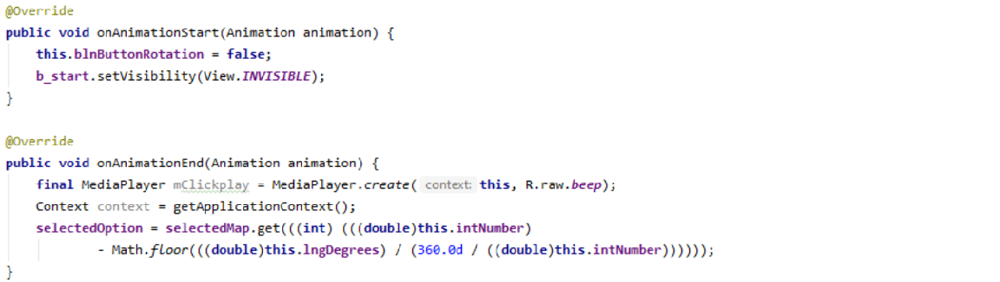

Tummy Quest
What is Tummy Quest?
Tummy Quest is an app that utilizes a “wheel of fortune” spinner that allows the user to decide what to eat from a variety of cuisines and food types. The user would first select between drinks, food, and dessert before being presented with several, more specific options for the app to randomly select from. This application was a personal project during the COVID-19 lockdown to apply my prior knowledge of Java and learn how to use HTML. Although I chose to keep the app free, I encouraged those who downloaded the app to consider donating to their local food bank or community help programs. With the help of my cousins and other family members, I was able to create and program Tummy Quest’s visual elements and code from scratch and publish the app by early July. 43% of Tummy Quest users donated towards a cause against COVID-19.

How it Works
The application was created using Android studio due to the difficulty of publishing iOS applications. Hash maps were utilized to select the right wheel with the correct combination of selected options. The methods below were critical to the functionality of the spinning wheel, starting the animation of the wheel and determining the angle on which the wheel will land upon. Adobe Illustrator was used to create the visual elements of Tummy Quest and the 48 different combinations/wheels. Due to the fees required to implement Google Maps into the app, the app, with user input regarding location, redirects to the already installed Google Maps on the user’s device.
